InSite RSvP (Remote Service Platform) replaces existing InSite IIP (InSite1) as the connectivity platform going forward. InSite RSvP is an enhanced connectivity platform based on InSite2 architecture (Currently used by MM3 connectivity) where the system will call the back office and identify/register itself. This chapter described the essential steps required to perform RSvP Insite Checkout. For more detail about RSvP architecture, please refer to Theory of Operation section in the service manual
Topic ID: task_kd5_4w1_zhb
Accesses required for Remote Service Platform (RSvP)
Procedure
CRM: Contact the regional field support teams to get access to the correct CRM in the region.
Note The training(s) required for access are listed on the linked support central sites.
Topic ID: task_cwf_hbz_ngb
RSvP Pre-Install Requirements
Procedure
The MR scanner requires connectivity directly to the internet.
The MR system allows for DNS configuration or proxy server-based connection to the internet.
A current internet connection supporting InSite1 connection can be reused.
RSvP uses SSL/TLS protocol, https over port 443.
In rare cases when the customer does not accept the above connection protocol, once the issue is escalated, the local connectivity team can provide help to connect via SSL/TLS proxy IP over the site-to-site VPN.
The following information is required from the customer prior to starting an upgrade to RSvP:
Final system ID for the site (final registration in FFA).
DNS IP address or proxy IP Address (required for modality configuration / internet access).
If a customer wishes to only whitelist the specific URLs, the following are the required URLs for RSvP connectivity:
https://insite.gehealthcare.com
https://as1-insite.gehealthcare.com
https://as2-insite.gehealthcare.com
https://gehealthcare-ns.flexnetoperations.com
https://download.flexnetoperations.com
Note DOCxxxxxxxxx provides a form that may be used to record the customer information necessary for successful RSvP configuration.
If the software being upgraded to RSvP is already connected through InSite1, the following tests should be conducted to confirm the customer's internet connection before the software is upgraded to RSvP.
(For Customers connected through DNS) Configure and test DNS using the following instructions:
Configure DNS:
(For SW revision 26.0 or later) The MR software supports DNS configuration. Check the USE DNS box and enter the DNS IP addresses on the Network Info tab of Guided Install.Figure 1. Network info DNS entry
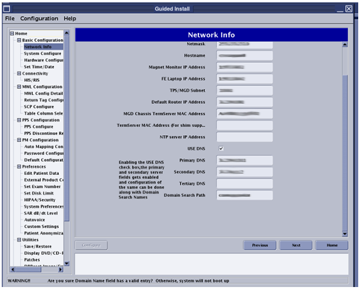
(For SW revision 25 or earlier) The MR software does not support DNS configuration. Do the following to configure DNS:
Launch Guided Install
Make sure the Network Info tab has correct network configuration information for IP/Netmask/Gateway.
Click on configure > Filequit.
Open a terminal and login as root.
Type gedit /etc/nsswitch.conf and press Enter.
Add dns to the entry at the end of the file: hosts: files dns.
Type gedit /etc/resolv.conf and press Enter.
Add Google or any other DNS entries:
nameserver <site DNS IP address 1>
nameserver <site DNS IP address 2>
Save and quit the edit terminal.
Restart the system.
Test connectivity via DNS:
Execute the following command in a terminal: >> openssl s_client -connect insite.gehealthcare.com:443.
Note If the system has connectivity, the digital certificate information will be displayed and the cursor will be waiting for the next command.
Enter the following at the prompt exactly as written, including the spaces: GET / HTTP/1.0
The system will respond with:
HTTP/1.0 200 OK
Server: BigIP
Connection: close
Content-Length: 148
<HTML><HEAD><TITLE>GE Healthcare Web Server</TITLE></HEAD><BODY><P><A HREF="http://gehealthcare.com/">GE Healthcare</A> Web Server</P></BODY></HTML>read:errno=0
If the test fails, use a public IP to determine if DNS resolution is the cause of the failed test. Type the following command and then repeat step ii: >> openssl s_client -connect 198.169.189.25:443.
(For Customers connected through a proxy) Use the following steps to test proxy-based connectivity:
RSvP Registration Process flow for Forward Production Installs
About this task
The workflow shown below is a tentative representation of the connectivity process for new MR system installs. Please follow your regional connectivity process as laid out by the connectivity team.
Figure 2. Forward production registration process
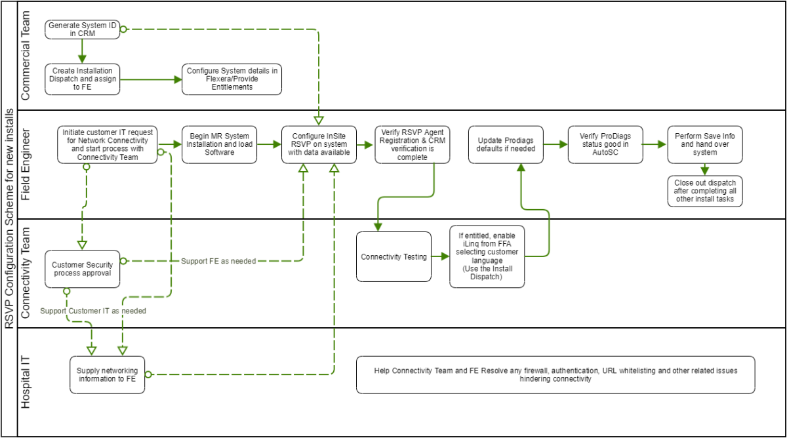
Topic ID: task_km1_ngd_5gb
RSvP Registration Process flow for Upgrades:
Procedure
Current InSite IIP sites have VPN routers at the site.
This router establishes a VPN connection to the GE back office.
On systems upgrading from InSite1, RSvP will connect through the same router directly to the RSvP server based on the URL provided during configuration.
If the customer has concerns connecting directly to internet, the issue must be escalated through regional processes to the local connectivity team who could consider configuring the GE InSite proxy IP address.
Note Configuring the system to connect through the GE VPN will slow down the connection and delay benefits of remote utilities to the customer along with disabling remote software updates to the system.
The workflow shown below is a tentative representation of the connectivity process for MR system upgrades. Please follow your regional connectivity process as laid out by the connectivity team.
Figure 3. Upgrade registration process
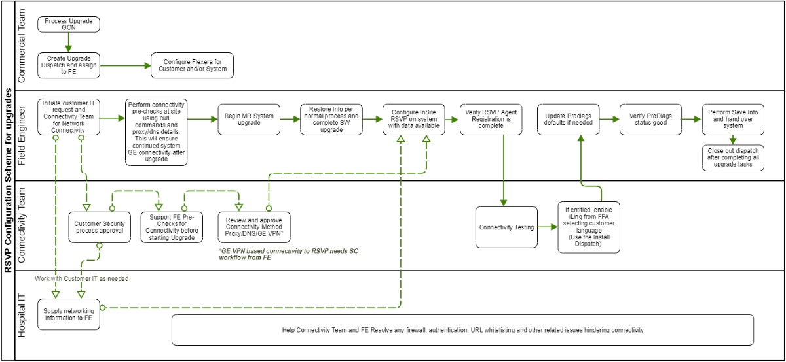
Topic ID: task_mgk_2yy_ngb
Detailed RSvP configuration procedure
About this task
Mobile System Configuration Process
Update the Sub or Child System ID in Guided Install under the System ID and Service ID field in Guided Install.
Follow the remaining configuration procedure in the following section and submit for RSvP registration.
This configuration will need to be repeated at every location of the Mobile System. Save info and restore info will carry over and automatically restore connectivity during system reboot.
If applicable, enable and configure DNS information in the Network Info tab.
Figure 4. Guided install network info
Configure the System ID and Service ID in the System Configure tab of Guided Install to the same system ID. Both fields are used interchangeably across various remote features and should be configured to be the same as the system ID of the MR system.
Navigate to the Service SW Insite window and click Configure Insite/IIP.
Figure 5. Service SW Insite
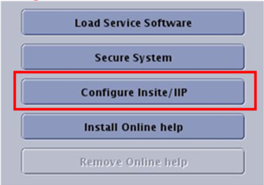
If the site is connecting through a proxy server, enable proxy configuration and provide the IP address/proxy information from the site.
Figure 6. Proxy configuration
Click Submit. A few minutes later (approximately 4 minutes) Registered will change to Yes, click Refresh multiple times as needed.
Figure 7. Registered
A few minutes later (approximately 4 minutes) CRM Verified will change to Yes, click Refresh multiple times as needed.
Figure 8. CRM verified
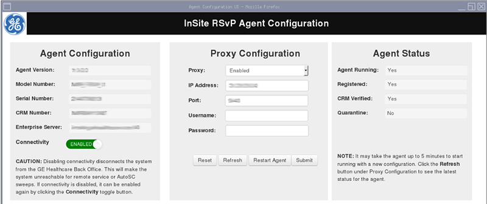
The InSite RSvP registration is complete.
Topic ID: task_eyh_ppn_phb
Enabling iLinq
About this task
Pre-Requisites:
FFA access is required to enable iLinq on the system. If you do not have access to FFA and RSvP, then please contact your regional connectivity team or MR support team in order to Enable iLinq.
RSvP registration must be complete on the system with Registered and CRM Verified set to Yes.
Note If RSvP registration was just completed, it could take up to 10 minutes for the system ID to display in FFA.
Procedure
The iLinq page will be blank until iLinq is enabled from FFA.
Create a service record for the site with its system ID and launch FFA.
Navigate to the CONNECT tab.
Make sure Connect Status for the system shows ONLINE and Connectivity Type is set to Insite2-RSvP.
Figure 9. iLinq connect status
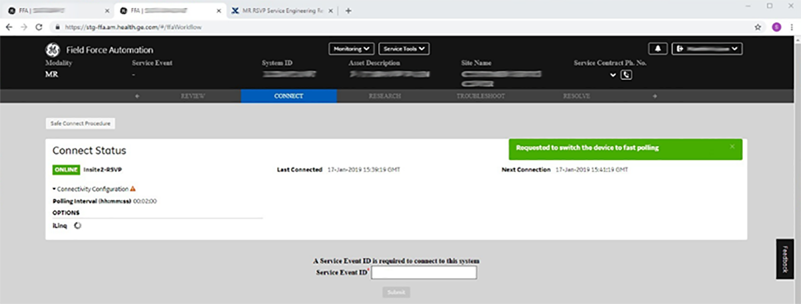
From the drop-down menu, select Configure iLinq.
Figure 10. Configure iLinq
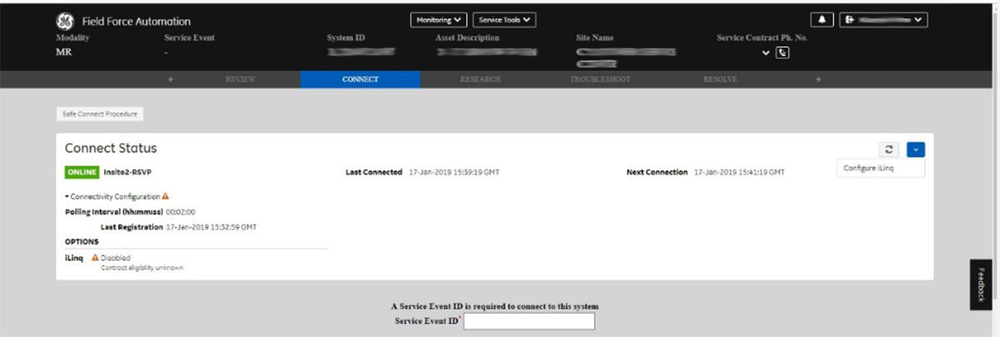
Set iLinq Status to Enabled. Select the correct language for the site from the drop-down list, and click Configure iLinq.
Figure 11. iLinq configuration
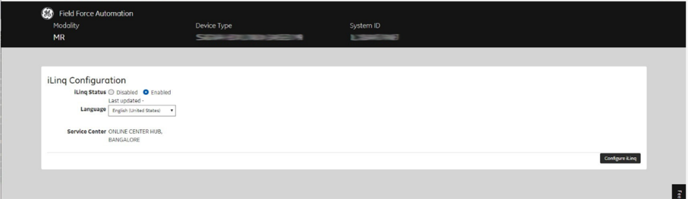
Click Done to close the window.
Figure 12. iLinq configuration successful
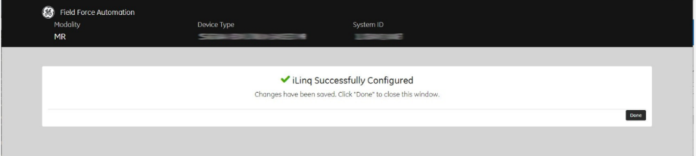
Once the iLinq checkout has been completed, reboot the host PC, the iLinq button will display as shown below.
Figure 13. iLinq button
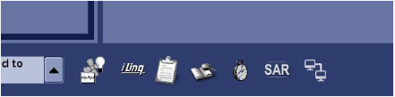
Go to the iLinq tab on the service desktop. The iLinq page should display. If the iLinq page does not display, click on the iLinq icon. This may take up to 15 seconds on the first attempt.
Figure 14. iLinq page
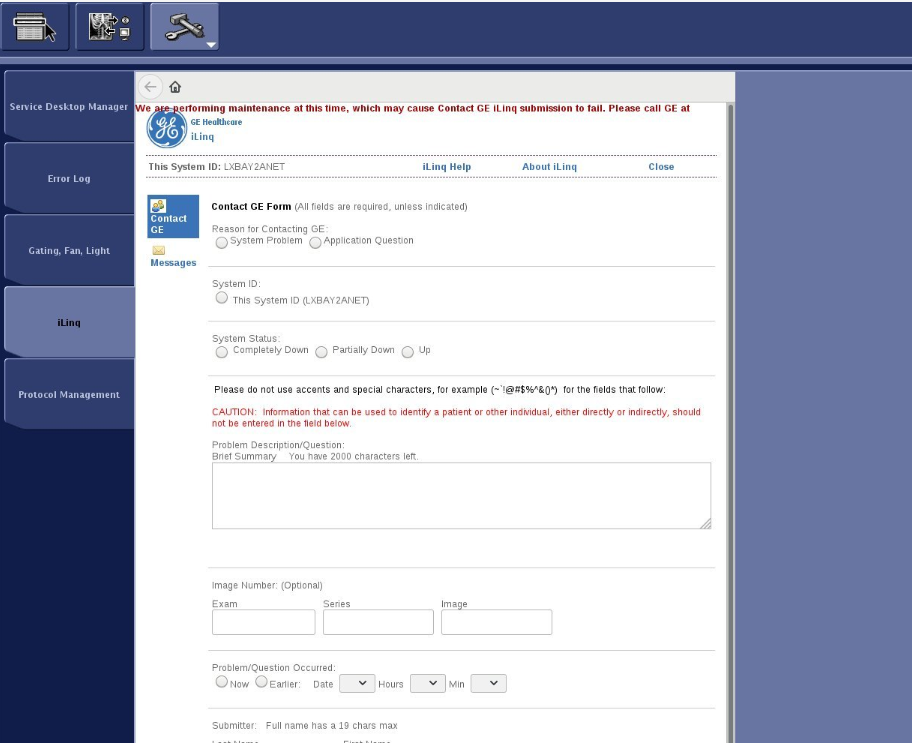
Note Since iLinq is always enabled remotely, a save info is often not performed to immediately save this setting. This results in the iLinq feature being unavailable after a software reload. Therefore, make sure a save info is done immediately after enabling iLinq from FFA.
Topic ID: task_cgz_k3g_4gb
SW upgrade workflow when RSvP agent is updated in new software
Procedure
Agent re-registration is needed after upgrade of agent at site...this is expected to happen via software reload process.
The current release of RSvP agent does not have this fix. In case an agent upgrade is detected, the Axeda back office will quarantine the system.
RTS Team will need to support to resolve the Quarantine status on the initial release.
Topic ID: task_okn_k3g_4gb
RSvP Default site settings
Procedure
The following table contains the default software implementation. This can be changed by the customer as required if there are any concerns.
Table 1. Default software implementation
Site
SW Content
Remote Service Connectivity
Data flow to AutoSc
Remote Service (iLinq, CSD, SSH, SFTP)
Flexera Download
Agent Status on Device
Default
Options
Default
Options
Default
Options
Default
Options
Contract/Non Contract
YES
ON
YES/NO
ON
YES/NO
ON
YES/NO
ON
YES/NO
ON
Figure 15. Status of data flow to AutoSc, software download, and remote service features
Connectivity could be disabled due to one of the following reasons:
Quarantine
Identify status:
On the system: Quarantine parameter is set to yes in the Agent Config user interface.Figure 17. System quarantine status
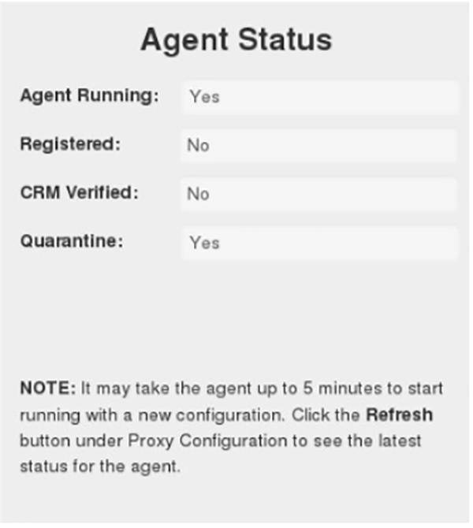
Remotely: Type /usr/local/bin/mrAgentApi.py agentstatus and press Enter.Figure 18. Remote quarantine status
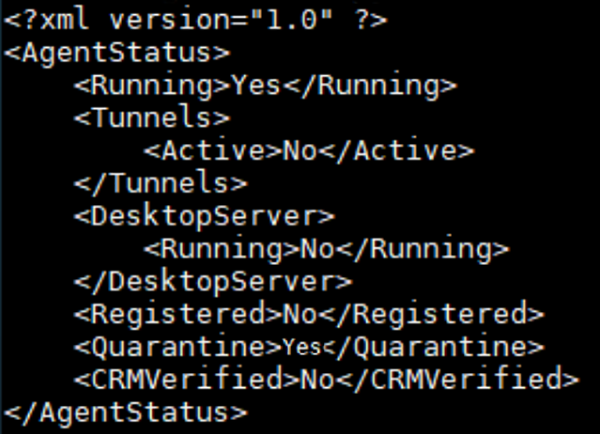
Possible reason for quarantine: More than one system with the same CRM number (system ID).
Correcting the quarantine: Creat an RTS ticket via the RSvP support central page: http://supportcentral.ge.com/products/sup_products.asp?prod_id=280498.
Reset token state:
This state is possible when there is a change in critical system parameters that are used to authenticate the asset.
Identify the status:
On the system:Figure 19. Token reset status
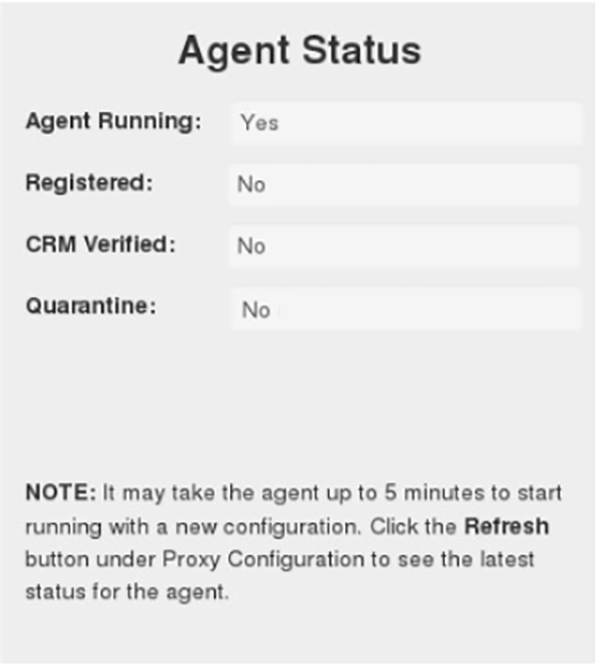
Remotely:
Assets that are in need of a token reset, cannot be accessed online. Therefore, it is not possible to detect this case remotely.
FFA will show indicator for token reset status. This information can be accessed in the InSite® RSvP Agent User OR Technical Reference Manual.
Possible reasons for a token reset state:
Change in operating system version (due to software upgrade).
Change in RSvP model type (due to software upgrade).
Other unknown reasons.
Correcting the token reset state: create an RTS ticket via the RSvP support central page: http://supportcentral.ge.com/products/sup_products.asp?prod_id=280498.
Other Connectivity issues:
Depending on connectivity methods at the site, there could be many possible causes for connectivity failure. Determine Connectivity Method provides an overview of the possible connectivity methods. More detailed information is available in the InSite® RSvP Agent User OR Technical Reference Manual.
Topic ID: task_vrt_kj5_phb
Determine Connectivity Method
About this task
There are 3 main methods for establishing connectivity from the RSvP agent on the modality to the GE web server.
Procedure
Customer provided DNS (domain name server). The domain name server returns the IP address associated with a provided URL. For the RSvP, agent the URL is https://insite.gehealthcare.com and the associated IP address may change in the future. Using DNS allows the modality to stay connected by configuring a single URL that doesn’t need to be changed. This is considered typical internet access. DNS server IP addresses are configured on the modality. Failure to configure DNS will result in a lack of connectivity.
Customer provided proxy server. Some customers may choose to have the modality configured to send traffic to a proxy server on their network. This server will handle the connection from the modality destined for the GE web server. Instead of standard internet access, the customer provided proxy IP address and port are configured on the modality. Authentication (user name & password) may also be required. This method does not require DNS configuration.
IPSec VPN (typically associated with InSite1 systems). Use of the existing IPSec VPN is discouraged for latency and functionality concerns. Connection speed will be affected. At some customer sites, VPN may be the only possible method of connectivity, these should be handled on a case-by-case basis with your GE connectivity support team.
Topic ID: task_ttr_sk5_phb
RSvP agent status
About this task
There are four main status indications on the RSvP agent. It is recommended that each modality implement this, however not all products have this feature.
Procedure
Agent Running: RSvP agent software has been enabled and the process is running on the modality. The agent should be attempting to establish a connection with the GE web server.
Agent Registered: The agent has successfully established an HTTPS connection to the GE web server. Associated modality specific information has been communicated to the server.
CRM Verified: The system ID that is configured on the modality has matched successfully with the asset record associated with the CRM platform. The CRM system ID configured on the modality must match exactly.
Quarantine: In the event that two or more systems are actively establishing HTTPS connections with the GE web server using the same CRM number (system ID), they are placed in quarantine condition. This requires a case to be submitted with the FFA support team to resolve.
Topic ID: task_cff_sk5_phb
Agent Fails To Register
About this task
In the event that the device agent is configured but does not show a registered status, there are three main reasons:
Procedure
The modality simply does not have internet access. There is no path for the modality to reach public internet space. This may be by design as some customer network segments are meant to restrict access to the internet, or there may be a network configuration issue that the customer will need to resolve.
The modality technically has internet access but does not have DNS configured. Since the modality will have a URL configured, DNS server IP addresses need to be configured to resolve to IP address associated with the GE web server URL.
Customer security policy does not allow access until an internal review process has been completed and access is granted. Many customer sites have advanced security layers to deal with internet related traffic on their network. This can include IPS/IDS (intrusion prevention/detection) sensors that must be explicitly configured to allow RSvP agent traffic to the GE web server.
Note Your GE connectivity support team can help identify the above cases and work with the customer to resolve.
Topic ID: task_bdf_tk5_phb
How To Determine Internet Access & DNS Issues
About this task
The associated troubleshooting flowchart has some simple tests to help determine if the agent does not register due to an internet access or DNS issue.
Procedure
For Linux based systems, leverage the built-in command line:
If the modality has DNS configured, use the curl command to attempt a connection the web server URL (curl -k https://insite.gehealthcare.com).
If the test fails the previous step, modify the curl command to specify the web server IP, this can help determine if the issue is DNS resolution related (curl -k https://198.169.189.25).
If the modality RSvP agent is configured with a customer provided proxy, modify the curl command to specify the proxy IP and port (curl https://insite.gehealthcare.com -x <proxy IP> : <port>). For example: curl https://insite.gehealthcare.com -x 10.150.2.2:8002.
Attempt to pass the IP of the GE web server to the customer proxy, the result may be useful in fault isolation (curl https://198.169.189.25 -x <proxy IP> : <port>). For example: curl https://198.169.189.25 -x 10.150.2.2:8002. For proxy servers with login requirements: https_proxy=http://<user>:<password>@<proxy IP>:<port #> curl -k https://198.169.189.25:443.
In summary, always reference your product specific service manual for configuration and troubleshooting information. Also leverage your connectivity support team to make sure this important connectivity can be established and maintained for remote support and product analytics.
Additional troubleshooting information is available in the InSite® RSvP Agent User OR Technical Reference Manual in the online documentation and the InSite® RSvP support central page: http://supportcentral.ge.com/products/sup_products.asp?prod_id=280498.